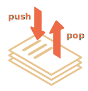
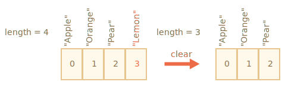

对象允许存储键值集合，这很好。
但很多时候我们发现还需要 有序集合，里面的元素都是按顺序排列的。例如，我们可能需要存储一些列表，比如用户、商品以及 HTML 元素等。
这里使用对象就不是很方便了，因为对象不能提供能够管理元素顺序的方法。我们不能在已有的元素“之间”插入一个新的属性。这种场景下对象就不太适用了。
这时一个特殊的数据结构数组（Array）就派上用场了，它能存储有序的集合。
创建一个空数组有两种语法：
let arr = new Array();
let arr = [];绝大多数情况下使用的都是第二种语法。我们可以在方括号中添加初始元素：
let fruits = ["Apple", "Orange", "Plum"];数组元素从 0 开始编号。
我们可以通过方括号中的数字获取元素：
let fruits = ["Apple", "Orange", "Plum"];
alert( fruits[0] ); // Apple
alert( fruits[1] ); // Orange
alert( fruits[2] ); // Plum可以替换元素：
fruits[2] = 'Pear'; // 现在变成了 ["Apple", "Orange", "Pear"]……或者向数组新加一个元素：
fruits[3] = 'Lemon'; // 现在变成 ["Apple", "Orange", "Pear", "Lemon"]length 属性的值是数组中元素的总个数：
let fruits = ["Apple", "Orange", "Plum"];
alert( fruits.length ); // 3也可以用 alert 来显示整个数组。
let fruits = ["Apple", "Orange", "Plum"];
alert( fruits ); // Apple,Orange,Plum数组可以存储任何类型的元素。
例如:
// 混合值
let arr = [ 'Apple', { name: 'John' }, true, function() { alert('hello'); } ];
// 获取索引为 1 的对象然后显示它的 name
alert( arr[1].name ); // John
// 获取索引为 3 的函数并执行
arr[3](); // hello数组就像对象一样，可以以逗号结尾：
```js
let fruits = [
"Apple",
"Orange",
"Plum"*!*,*/!*
];
```
因为每一行都是相似的，所以这种以“逗号结尾”的方式使得插入/移除项变得更加简单。队列（queue）是最常见的使用数组的方法之一。在计算机科学中，这表示支持两个操作的一个有序元素的集合：
push 在末端添加一个元素.shift 取出队列首端的一个元素，整个队列往前移，这样原先排第二的元素现在排在了第一。这两种操作数组都支持。
队列的应用在实践中经常会碰到。例如需要在屏幕上显示消息队列。
数组还有另一个用例，就是数据结构 栈。
它支持两种操作：
push 在末端添加一个元素.pop 从末端取出一个元素.所以新元素的添加和取出都是从“末端”开始的。
栈通常被被形容成一叠卡片：要么在最上面添加卡片，要么从最上面拿走卡片：

对于栈来说，最后放进去的内容是最先接收的，也叫做 LIFO（Last-In-First-Out），即后进先出法则。而与队列相对应的叫做 FIFO（First-In-First-Out），即先进先出。
JavaScript 中的数组既可以用作队列，也可以用作栈。它们允许你从首端/末端来添加/删除元素。
这在计算机科学中，允许这样的操作的数据结构被称为 双端队列（deque）。
作用于数组末端的方法：
pop
: 取出并返回数组的最后一个元素：
```js run
let fruits = ["Apple", "Orange", "Pear"];
alert( fruits.pop() ); // 移除 "Pear" 然后 alert 显示出来
alert( fruits ); // Apple, Orange
```push
: 在数组末端添加元素：
```js run
let fruits = ["Apple", "Orange"];
fruits.push("Pear");
alert( fruits ); // Apple, Orange, Pear
```
调用 `fruits.push(...)` 与 `fruits[fruits.length] = ...` 是一样的。作用于数组首端的方法：
shift
: 取出数组的第一个元素并返回它：
```js run
let fruits = ["Apple", "Orange", "Pear"];
alert( fruits.shift() ); // 移除 Apple 然后 alert 显示出来
alert( fruits ); // Orange, Pear
```unshift
: 在数组的首端添加元素：
```js run
let fruits = ["Orange", "Pear"];
fruits.unshift('Apple');
alert( fruits ); // Apple, Orange, Pear
```push 和 unshift 方法都可以一次添加多个元素：
let fruits = ["Apple"];
fruits.push("Orange", "Peach");
fruits.unshift("Pineapple", "Lemon");
// ["Pineapple", "Lemon", "Apple", "Orange", "Peach"]
alert( fruits );数组是一种特殊的对象。使用方括号来访问属性 arr[0] 实际上是来自于对象的语法。它其实与 obj[key] 相同，其中 arr 是对象，而数字用作键（key）。
它们扩展了对象，提供了特殊的方法来处理有序的数据集合以及 length 属性。但从本质上讲，它仍然是一个对象。
记住，在 JavaScript 中只有 7 种基本类型。数组是一个对象，因此其行为也像一个对象。
例如，它是通过引用来复制的：
let fruits = ["Banana"]
let arr = fruits; // 通过引用复制 (两个变量引用的是相同的数组)
alert( arr === fruits ); // true
arr.push("Pear"); // 通过引用修改数组
alert( fruits ); // Banana, Pear — 现在有 2 项了……但是数组真正特殊的是它们的内部实现。JavaScript 引擎尝试把这些元素一个接一个地存储在连续的内存区域，就像本章的插图显示的一样，而且还有一些其它的优化，以使数组运行得非常快。
但是，如果我们不像“有序集合”那样使用数组，而是像常规对象那样使用数组，这些就都不生效了。
例如，从技术上讲，我们可以这样做:
let fruits = []; // 创建一个数组
fruits[99999] = 5; // 分配索引远大于数组长度的属性
fruits.age = 25; // 创建一个具有任意名称的属性这是可以的，因为数组是基于对象的。我们可以给它们添加任何属性。
但是 Javascript 引擎会发现，我们在像使用常规对象一样使用数组，那么针对数组的优化就不再适用了，然后对应的优化就会被关闭，这些优化所带来的优势也就荡然无存了。
数组误用的几种方式:
arr.test = 5。arr[0]，然后添加 arr[1000] (它们中间什么都没有)。arr[1000]，arr[999] 等等。请将数组视为作用于 有序数据 的特殊结构。它们为此提供了特殊的方法。数组在 JavaScript 引擎内部是经过特殊调整的，使得更好地作用于连续的有序数据，所以请以正确的方式使用数组。如果你需要任意键值，那很有可能实际上你需要的是常规对象 {}。
push/pop 方法运行的比较快，而 shift/unshift 比较慢。
为什么作用于数组的末端会比首端快呢？让我们看看在执行期间都发生了什么：
fruits.shift(); // 从首端取出一个元素只获取并移除数字 0 对应的元素是不够的。其它元素也需要被重新编号。
shift 操作必须做三件事:
0 的元素。1 改成 0，2 改成 1 以此类推，对其重新编号。length 属性。
数组里的元素越多，移动它们就要花越多的时间，也就意味着越多的内存操作。
unshift 也是一样：为了在数组的首端添加元素，我们首先需要将现有的元素向右移动，增加它们的索引值。
那 push/pop 是什么样的呢？它们不需要移动任何东西。如果从末端移除一个元素，pop 方法只需要清理索引值并缩短 length 就可以了。
pop 操作的行为：
fruits.pop(); // 从末端取走一个元素
pop 方法不需要移动任何东西，因为其它元素都保留了各自的索引。这就是为什么 pop 会特别快。
push 方法也是一样的。
遍历数组最古老的方式就是 for 循环：
let arr = ["Apple", "Orange", "Pear"];
*!*
for (let i = 0; i < arr.length; i++) {
*/!*
alert( arr[i] );
}但对于数组来说还有另一种循环方式，for..of：
let fruits = ["Apple", "Orange", "Plum"];
// 遍历数组元素
for (let fruit of fruits) {
alert( fruit );
}for..of 不能获取当前元素的索引，只是获取元素值，但大多数情况是够用的。而且这样写更短。
技术上来讲，因为数组也是对象，所以使用 for..in 也是可以的：
let arr = ["Apple", "Orange", "Pear"];
*!*
for (let key in arr) {
*/!*
alert( arr[key] ); // Apple, Orange, Pear
}但这其实是一个很不好的想法。会有一些潜在问题存在：
for..in 循环会遍历 所有属性，不仅仅是这些数字属性。
在浏览器和其它环境中有一种称为“类数组”的对象，它们 看似是数组。也就是说，它们有 length 和索引属性，但是也可能有其它的非数字的属性和方法，这通常是我们不需要的。for..in 循环会把它们都列出来。所以如果我们需要处理类数组对象，这些“额外”的属性就会存在问题。
for..in 循环适用于普通对象，并且做了对应的优化。但是不适用于数组，因此速度要慢 10-100 倍。当然即使是这样也依然非常快。只有在遇到瓶颈时可能会有问题。但是我们仍然应该了解这其中的不同。
通常来说，我们不应该用 for..in 来处理数组。
当我们修改数组的时候，length 属性会自动更新。准确来说，它实际上不是数组里元素的个数，而是最大的数字索引值加一。
例如，一个数组只有一个元素，但是这个元素的索引值很大，那么这个数组的 length 也会很大：
let fruits = [];
fruits[123] = "Apple";
alert( fruits.length ); // 124要知道的是我们通常不会这样使用数组。
length 属性的另一个有意思的点是它是可写的。
如果我们手动增加它，则不会发生任何有趣的事儿。但是如果我们减少它，数组就会被截断。该过程是不可逆的，下面是例子：
let arr = [1, 2, 3, 4, 5];
arr.length = 2; // 截断到只剩 2 个元素
alert( arr ); // [1, 2]
arr.length = 5; // 又把 length 加回来
alert( arr[3] ); // undefined：被截断的那些数值并没有回来所以，清空数组最简单的方法就是：arr.length = 0;。
这是创建数组的另一种语法：
let arr = *!*new Array*/!*("Apple", "Pear", "etc");它很少被使用，因为方括号 [] 更短更简洁。而且这种语法还存在一些诡异的特性。
如果使用单个参数（即数字）调用 new Array，那么它会创建一个 指定了长度，却没有任何项 的数组。
让我们看看如何搬起石头砸自己的脚:
let arr = new Array(2); // 会创建一个 [2] 的数组吗？
alert( arr[0] ); // undefined！没有元素。
alert( arr.length ); // length 2在上面的代码中，new Array(number) 创建的数组的所有元素都是 undefined。
为了避免这种乌龙事件，我们通常都是使用方括号的，除非我们清楚地知道自己正在做什么。
数组里的项也可以是数组。我们可以将其用于多维数组，例如存储矩阵：
let matrix = [
[1, 2, 3],
[4, 5, 6],
[7, 8, 9]
];
alert( matrix[1][1] ); // 最中间的那个数数组有自己的 toString 方法的实现，会返回以逗号隔开的元素列表。
例如：
let arr = [1, 2, 3];
alert( arr ); // 1,2,3
alert( String(arr) === '1,2,3' ); // true此外，我们试试运行一下这个：
alert( [] + 1 ); // "1"
alert( [1] + 1 ); // "11"
alert( [1,2] + 1 ); // "1,21"数组没有 Symbol.toPrimitive，也没有 valueOf，它们只能执行 toString 进行转换，所以这里 [] 就变成了一个空字符串，[1] 变成了 "1"，[1,2] 变成了 "1,2"。
当 "+" 运算符把一些项加到字符串后面时，加号后面的项也会被转换成字符串，所以下一步就会是这样：
alert( "" + 1 ); // "1"
alert( "1" + 1 ); // "11"
alert( "1,2" + 1 ); // "1,21"数组是一种特殊的对象，适用于存储和管理有序的数据项。
声明:
// 方括号 (常见用法)
let arr = [item1, item2...];
// new Array (极其少见)
let arr = new Array(item1, item2...); 调用 new Array(number) 会创建一个给定长度的数组，但不含有任何项。
length 属性是数组的长度，准确地说，它是数组最后一个数字索引值加一。它由数组方法自动调整。
如果我们手动缩短 length，那么数组就会被截断。
我们可以通过下列操作以双端队列的方式使用数组：
push(...items) 在末端添加 items 项。pop() 从末端移除并返回该元素。shift() 从首端移除并返回该元素。unshift(...items) 从首端添加 items 项。遍历数组的元素：
for (let i=0; i<arr.length; i++) — 运行得最快，可兼容旧版本浏览器。for (let item of arr) — 现代语法，只能访问 items。for (let i in arr) — 永远不要用这个。在下一章节 info:array-methods 中，我们会继续学习数组，学习更多添加、移除、提取元素和数组排序的方法。